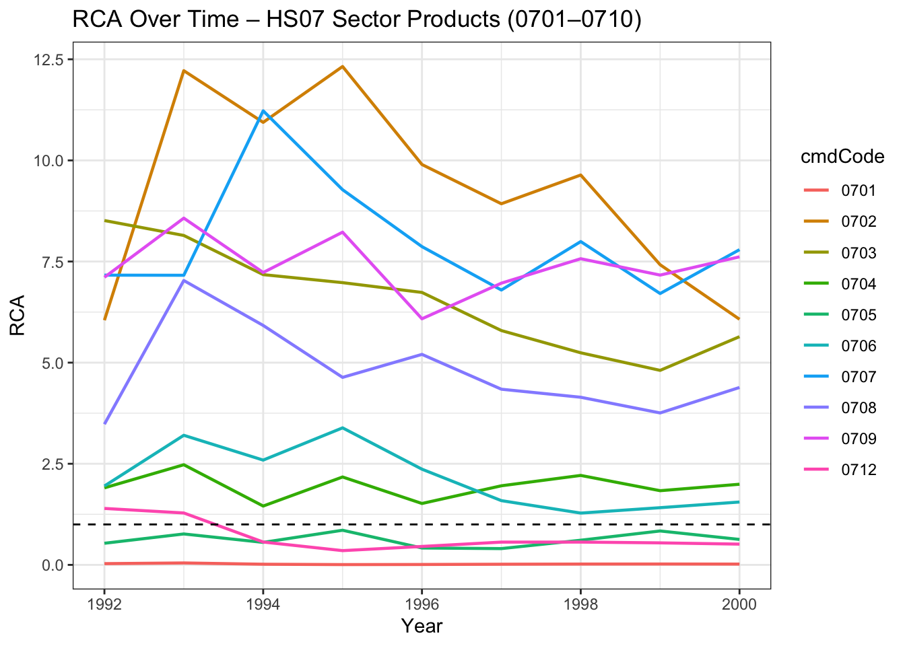

library(ggplot2)
library(readxl)
library(dplyr)
#library(arrow)
library(janitor)
library(readr)
library(gt)eda
#packages necessary for eda
07- VEGETABLES AND CERTAIN ROOTS AND TUBERS; EDIBLE
# read the datasets in each folder
#mexico exports of 07 VEGETABLES AND CERTAIN ROOTS AND TUBERS; EDIBLE time 1992 -> 2000
mx_xports_07 <- read_csv("mx_xports_prod_i/mx_xports_07.csv")
#mexico total exports time 1992 -> 2000
mx_xports_all <- read_csv("mx_total_xports_world/mx_xports_all.csv")
## world exports of 07 time 1992 -> 2000
world_xports_07 <- read_csv("world_xports_prod_i/world_xports_07.csv")
## world exports of all products time 1992 -> 2000
world_xports_all <- read_csv("world_total_xports/world_xports_all.csv")## arrange the periods in each dataframe by creating a function
necessary_variables <- function(df) {
df |>
arrange(period) |>
select(period, reporterISO, cmdCode, flowCode, qty, netWgt, fobvalue, primaryValue)
}mx_xports_07 <- necessary_variables(mx_xports_07)
mx_xports_all <- necessary_variables(mx_xports_all)
world_xports_07 <- necessary_variables(world_xports_07)
world_xports_all <- necessary_variables(world_xports_all)## RCA calculation function
calculate_rca <- function(country_product, country_total, world_product, world_total) {
# join by period to align years
rca_df <- country_product %>%
inner_join(country_total, by = "period", suffix = c("_prod", "_total")) %>%
inner_join(world_product, by = "period") %>%
inner_join(world_total, by = "period", suffix = c("_world_prod", "_world_total")) %>%
mutate(
RCA = (fobvalue_prod / fobvalue_total) /
(fobvalue_world_prod / fobvalue_world_total)
) %>%
select(period, RCA)
return(rca_df)
}## apply to datafranes
mx_rca_07_1992_2000 <- calculate_rca(
mx_xports_07,
mx_xports_all,
world_xports_07,
world_xports_all)ggplot(mx_rca_07_1992_2000, aes(x = period, y = RCA)) +
geom_line(color = "darkgreen", size = 1.2) +
geom_hline(yintercept = -1, linetype = "dashed", color = "red") +
labs(
title = "Mexico's RCA in Product 07 (Vegetables and Tubers)",
x = "Year",
y = "RCA Index"
) +
theme_bw()
FUNCTIONS
##GENERALIZED RCA ANALYSIS
## Generalized RCA function for any product code
#calculate_rca_for_product <- function(product_code) {
# build file paths for product
# mx_prod_path <- paste0("mx_xports_prod_i/mx_xports_", product_code, ".csv")
# world_prod_path <- paste0("world_xports_prod_i/world_xports_", product_code, ".csv")
# load and read the data
#mx_xports_prod <- read_csv(mx_prod_path, show_col_types = FALSE)
# world_xports_prod <- read_csv(world_prod_path, show_col_types = FALSE)
# laod world totals for time frame
#mx_xports_all <- read_csv("mx_total_xports_world/mx_xports_all.csv", show_col_types = FALSE)
#world_xports_all <- read_csv("world_total_xports/world_xports_all.csv", show_col_types = FALSE)
# clean and arrange using necessary_varioables function
# mx_xports_prod <- necessary_variables(mx_xports_prod)
# world_xports_prod <- necessary_variables(world_xports_prod)
# mx_xports_all <- necessary_variables(mx_xports_all)
# world_xports_all <- necessary_variables(world_xports_all)
# calculate RCA
# rca_df <- mx_xports_prod %>%
# inner_join(mx_xports_all, by = "period", suffix = c("_prod", "_total")) %>%
# inner_join(world_xports_prod, by = "period") %>%
# inner_join(world_xports_all, by = "period", suffix = c("_world_prod", "_world_total")) %>%
# mutate(
# RCA = (fobvalue_prod / fobvalue_total) /
# (fobvalue_world_prod / fobvalue_world_total)
# ) %>%
# select(period, RCA) %>%
# mutate(product_code = product_code)
# return(rca_df)
#}GDP- Mexico
# load the file
mexico_gdp <- read_csv("real_economy/mexico_gdp.csv")
#shares file
mx_shares_xports_sector <- read_csv("real_economy/mx_shares_xports_sector.csv")k <- mx_shares_xports_sector |>
filter(Code == 1) |>
arrange(desc(`current gross exports`))ENTIRE 07 SECTOR CODE
Now, we are tasked to clean the dataset and calculate an RCA given the dataset with the entire sector. Using the code above, find a way to generalize the RCA calculation to continue the calculation, with an ultimate goal of showing an RCA graph for each product in the sector.
# read the dataframe of the 07 sector contaning country MX exports of product 0701, 0702, 0703, 0704, 0705, 0706, 0707, 0708, 0709, 0710
#mexico exports of products 0701 to 0710 and time 1992 -> 2000
mx_xports_sector_07 <- read_csv("mx_xports_prod_i/mx_xports_sector_07.csv")Now, we must use the necessary variables for the RCA. necessary variables are the following: period, reporterISO, cmdCode, flowCode, qty, netWgt, fobvalue, primaryValue. Recall that the RCA variable is calculated with the following:
RCA = [(Country Exports of Product i / Country A Exports of ALL products) / (World Exports of product i / World Exports of all products)]
\(\text{RCA}_i = \frac{\dfrac{X_{A,i}}{X_{A,\text{all}}}} {\dfrac{X_{World,i}}{X_{World,\text{all}}}}\)
The RCA variable calculates a share of country exports a product over the world exports of said product. If the RCA variable is greater than, or equal to 1, then the country has a revealed comparative advantage in producing said good. According to neoclassical theory, gains from trade are still probable in comparative advantage. Theory says to export goods in which the country has a comparative advantage in producing.
mx_xports_sector_07 <- necessary_variables(mx_xports_sector_07)Now, we have the necessary variables, Country MX Exports of product 0701 -> 0710. We have the data of Mexico’s exports of all products, titled mx_xports_all. Now, we need World’s exports of products 0701 -> 0710. We can do this by using UNCOMTRADE data as well. Repeating the same steps, we will grab the necessary variables.
#load the dataframe of world exports of prod 0701 -> 0710
world_xports_sector_07 <- read_csv("world_xports_prod_i/world_xports_sector_07.csv")
#grab necessary variables.
world_xports_sector_07 <- necessary_variables(world_xports_sector_07)We now have World exports of product 0701 -> 0710 with the same time period of 1992 to 2000. Recall we have datasets of Mexico’s exports of all products titled mx_xports_all with variables period, reporterISO, cmdCode, flowCode, qty, netWgt, fobvalue, primaryValue. We also have world_xports_all which contains world exports of all products with variables period, reporterISO, cmdCode, flowCode, qty, netWgt, fobvalue, primaryValue. However, notice that world_xports_sector_07 and mx_xports_sector_07 have the cmdCode, however, they are not aggregated, and their cmdCode varies from 0701 -> 0710. Below is an attempted geenralized calclation of RCA, with a clear difference of grouping by group_by(period, cmdCode) due to the nature of the dataframe with varying cmdCodes
calculate_rca_generalized <- function(country_sector_df,
world_sector_df,
country_all_df,
world_all_df) {
#first, we aggregate by year and product, with variables period, and cmdCode
country_prod <- country_sector_df |>
group_by(period, cmdCode) |>
summarise(country_product_value = sum(fobvalue, na.rm = TRUE), .groups = "drop")
world_prod <- world_sector_df |>
group_by(period, cmdCode) |>
summarise(world_product_value = sum(fobvalue, na.rm = TRUE), .groups = "drop")
# 2. Aggregate total exports (denominator)
country_all <- country_all_df |>
group_by(period) |>
summarise(total_country_value = sum(fobvalue, na.rm = TRUE), .groups = "drop")
world_all <- world_all_df |>
group_by(period) |>
summarise(total_world_value = sum(fobvalue, na.rm = TRUE), .groups = "drop")
# 3. Merge everything
rca_df <- country_prod |>
left_join(world_prod, by = c("period", "cmdCode")) |>
left_join(country_all, by = "period") |>
left_join(world_all, by = "period") |>
mutate(
RCA = (country_product_value / total_country_value) /
(world_product_value / total_world_value),
has_CA = RCA >= 1
) |>
arrange(period, cmdCode)
return(rca_df)
}Let us test this in action to see if it works
RCA of sector 0701 to 0710
# need: country_sector_df, world_sector_df, country_all_df, world_all_df
# have: mx_xports_sector_07, world_xports_sector_07, mx_xports_all, world_xports_all
rca_sector_07 <- calculate_rca_generalized(mx_xports_sector_07, world_xports_sector_07,mx_xports_all, world_xports_all)Visualize over time
ggplot(rca_sector_07, aes(x = period, y = RCA, color = cmdCode, group = cmdCode)) +
geom_line(size = 0.8) +
geom_hline(yintercept = 1, linetype = "dashed") +
labs(title = "RCA Over Time – HS07 Sector Products (0701–0710)",
x = "Year", y = "RCA") +
theme_bw()
We can now develop code to show which products have an RCA > 1 and RCA < 1.
We can do this by running a simple filter:
## show which years had an RCA > 1
table_RCA_gt1 <- rca_sector_07 |>
filter(RCA > 1) |>
arrange(period, cmdCode)or by showing which years had an RCA > 1
#summarize the comparative advantage by product by grouping by product code
summary_CA_by_product <- rca_sector_07 |>
group_by(cmdCode) |>
summarise(
years_with_CA = paste(period[RCA > 1], collapse = ", "),
n_years_CA = sum(RCA > 1),
total_years = n(),
share_years_CA = n_years_CA / total_years
)And a publication ready table:
summary_CA_by_product |>
gt() |>
tab_header(
title = "Mexico’s Revealed Comparative Advantage (RCA > 1)",
subtitle = "HS-07 Sector Products (0701–0710)"
)| Mexico’s Revealed Comparative Advantage (RCA > 1) | ||||
|---|---|---|---|---|
| HS-07 Sector Products (0701–0710) | ||||
| cmdCode | years_with_CA | n_years_CA | total_years | share_years_CA |
| 0701 | 0 | 9 | 0.0000000 | |
| 0702 | 1992, 1993, 1994, 1995, 1996, 1997, 1998, 1999, 2000 | 9 | 9 | 1.0000000 |
| 0703 | 1992, 1993, 1994, 1995, 1996, 1997, 1998, 1999, 2000 | 9 | 9 | 1.0000000 |
| 0704 | 1992, 1993, 1994, 1995, 1996, 1997, 1998, 1999, 2000 | 9 | 9 | 1.0000000 |
| 0705 | 0 | 9 | 0.0000000 | |
| 0706 | 1992, 1993, 1994, 1995, 1996, 1997, 1998, 1999, 2000 | 9 | 9 | 1.0000000 |
| 0707 | 1992, 1993, 1994, 1995, 1996, 1997, 1998, 1999, 2000 | 9 | 9 | 1.0000000 |
| 0708 | 1992, 1993, 1994, 1995, 1996, 1997, 1998, 1999, 2000 | 9 | 9 | 1.0000000 |
| 0709 | 1992, 1993, 1994, 1995, 1996, 1997, 1998, 1999, 2000 | 9 | 9 | 1.0000000 |
| 0712 | 1992, 1993 | 2 | 9 | 0.2222222 |
We can fix this dataframe by changing the name of the previous one